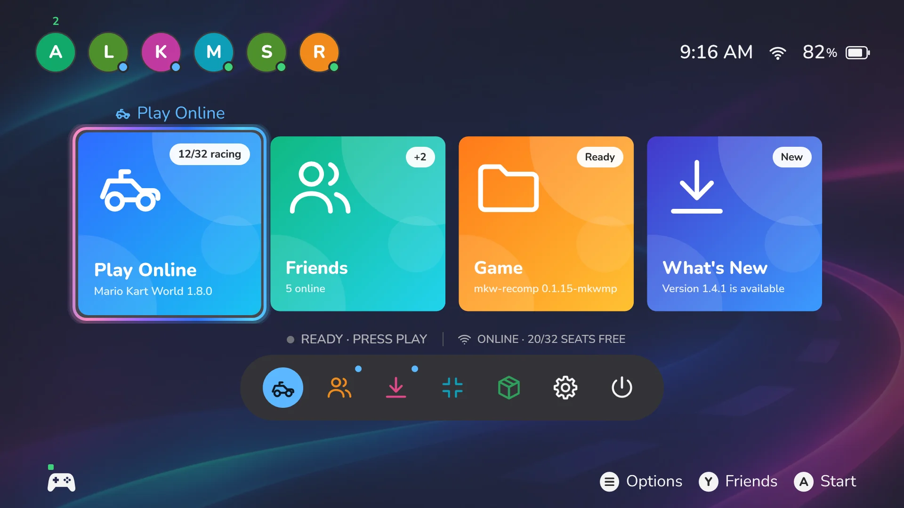
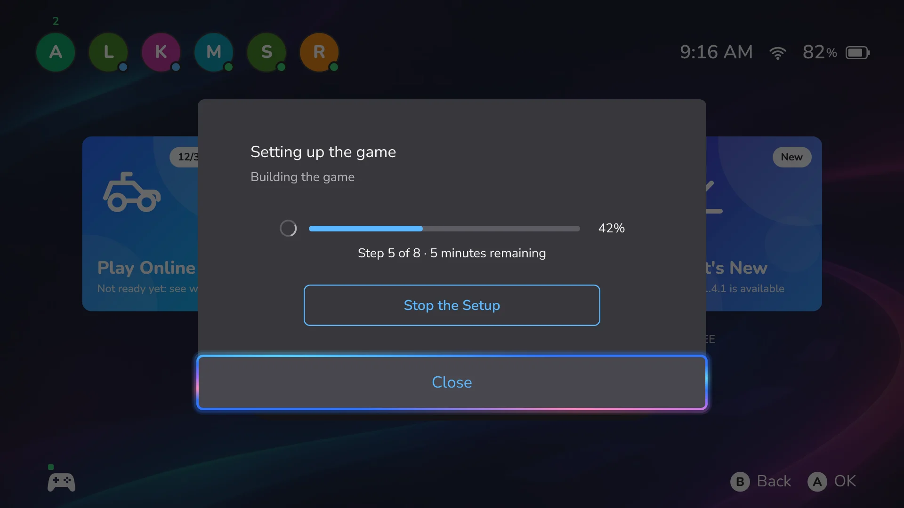
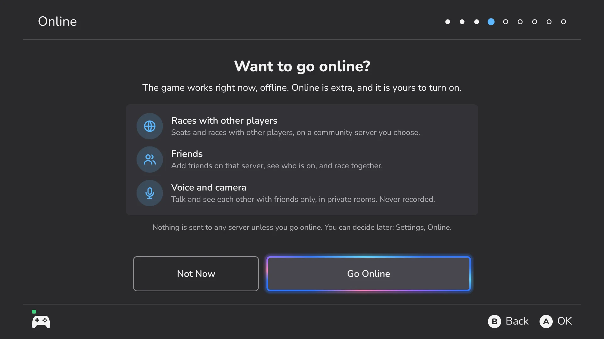
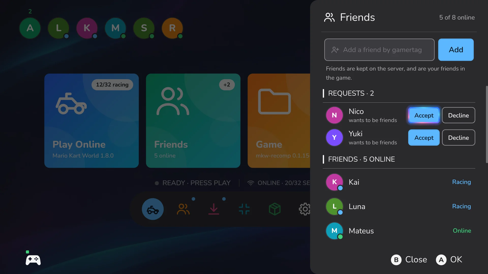
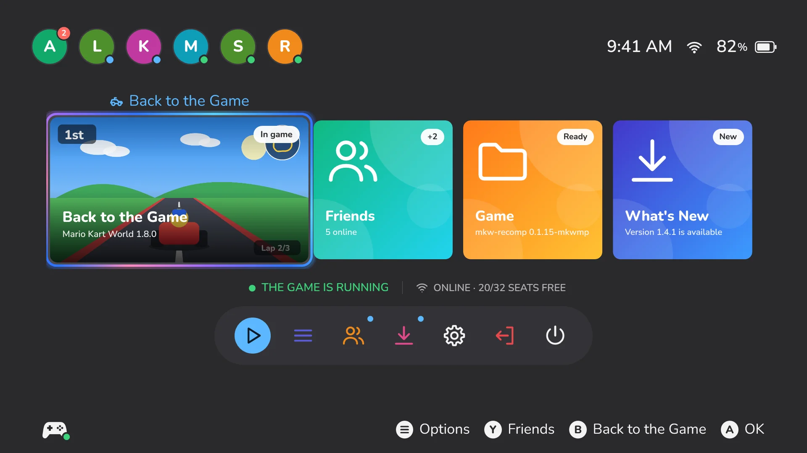
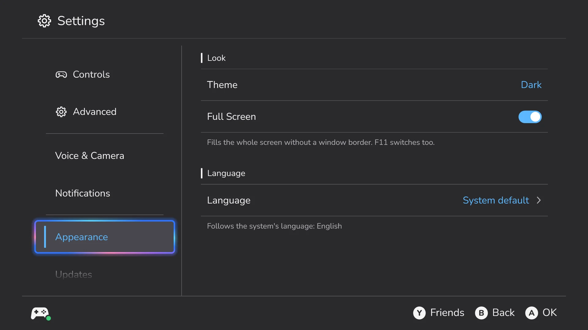
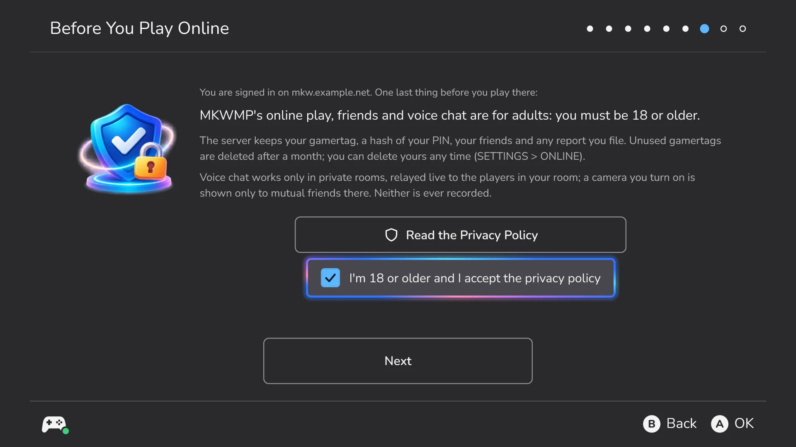

Corra online. Do seu jeito.
O MKWMP é um launcher para o mkw-recomp, a versão de PC de Mario Kart World gerada a partir da sua própria cópia do jogo. Ele configura o jogo para você, joga offline desde o primeiro minuto e leva você para servidores da comunidade, com amigos, chat de voz e mods.
Última versão v1.4.0Windows · Steam DeckGrátis e de código aberto

Vindo da 1.3?
A 1.4 é um launcher novo (mkwmp.exe), e a 1.3 não consegue se atualizar para ele. Baixe a 1.4 uma vez, à mão, e descompacte na mesma pasta da sua 1.3: ela mantém sua gamertag, seu PIN, seu servidor e suas escolhas. Depois, apague o mkwmp-launcher.exe antigo. No Steam Deck, o comando abaixo faz tudo isso.
Configuração de uma vez
Aponte o MKWMP para a sua própria cópia do jogo, versão 1.8.0, como .nup, .nx ou pasta. Ele faz o resto.

Offline primeiro, online quando quiser
O jogo é seu desde o primeiro minuto, sem conta. Ir para o online é uma escolha: escolha um servidor, registre uma gamertag, receba um PIN.

Servidores
Qualquer pessoa pode hospedar um servidor. Os públicos aparecem na lista de servidores, e o launcher mostra o mais próximo primeiro. Esta lista é ao vivo.
O navegador só consegue medir servidores com HTTPS; o launcher mede todos. Quanto menor, melhor: verde abaixo de 80 ms, amarelo abaixo de 160 ms.
Amigos, voz e câmera
Adicione amigos pela gamertag e veja quem está jogando. O chat de voz e a câmera funcionam só em salas privadas de amigos, nunca com desconhecidos nas partidas abertas.

O overlay dentro do jogo
No jogo, aperte Guide (Home) ou Select + Start. O jogo pausa e encolhe para dentro da tela inicial do launcher, com seus amigos, as configurações e Sair do jogo ali mesmo.
O overlay precisa do mkw-recomp 0.1.16-mkwmp(.1) com o mod MKWMP: o launcher configura os dois.

Mods
Navegue pelo GameBanana dentro do launcher, instale com um botão e ligue ou desligue mods.

15 idiomas, claro e escuro
O launcher segue o idioma e o tema do seu sistema, ou os que você escolher.

Steam Deck e SteamOS
Um comando no Modo Desktop (Konsole) instala o MKWMP, adiciona ele à Steam com arte e o layout do controle, e roda tudo pelo Proton.
bash -s --.
Hospede seu próprio servidor
Uma VM pequena na nuvem, por uns US$5 por mês, roda um servidor para dezenas de jogadores. Um comando instala, abre o firewall e coloca o servidor na lista, para ele aparecer no launcher de todo mundo.
Privacidade
Cada servidor tem a sua política de privacidade. O launcher mostra a política depois que você entra, e o servidor guarda qual versão você aceitou. Quando a política muda, você é perguntado de novo.
Mostrada ao vivo de mkw.anarqz.dev/privacy. Outros servidores têm a própria.
